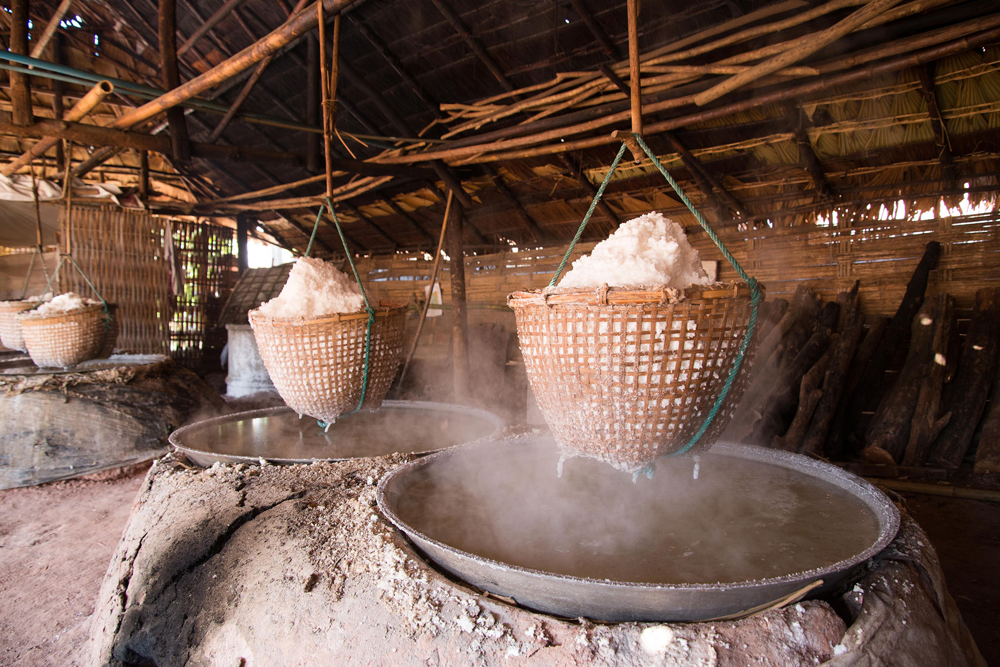
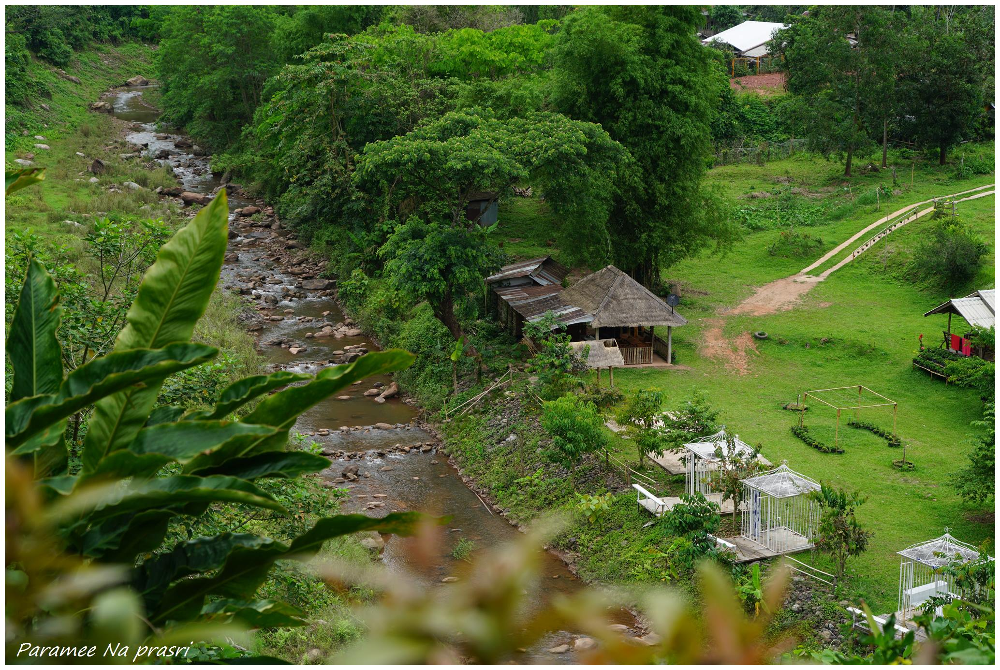
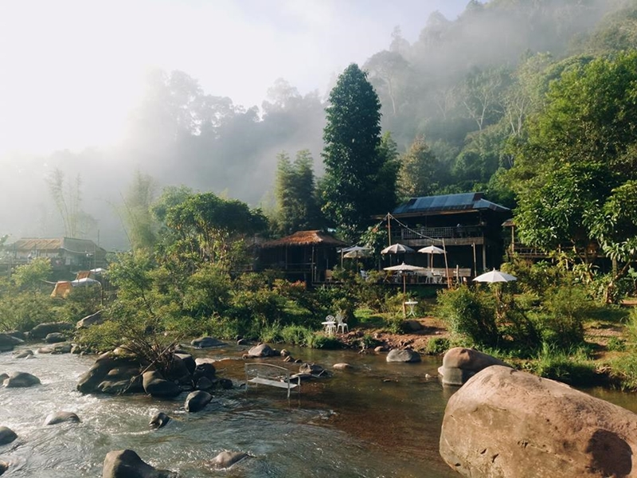
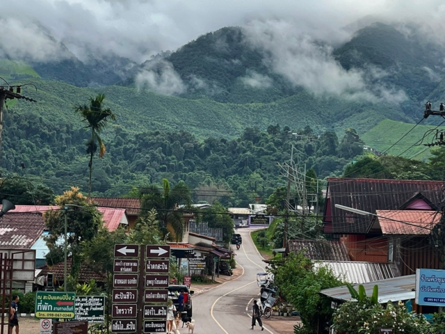
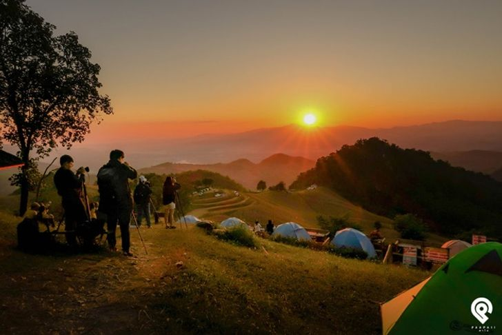
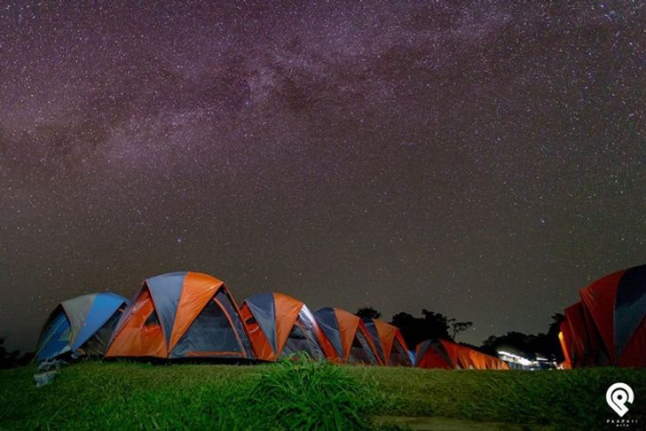

ข้อมูลเบื้องต้นของจังหวัดน่าน
น่าน เป็นจังหวัดในภาคเหนือตอนบนที่มีประวัติศาสตร์อันยาวนาน เมืองแห่งความสงบสุขและวิถีชีวิตสโลว์ไลฟ์ โอบล้อมด้วยขุนเขาสลับซับซ้อน เป็นแหล่งกำเนิดแม่น้ำน่าน มีชื่อเสียงทั้งในด้านสถาปัตยกรรมวัดวาอารามอันงดงาม (เช่น วัดภูมินทร์) แหล่งท่องเที่ยวธรรมชาติยอดฮิตอย่างบ่อเกลือโบราณ และทะเลหมอกอันงดงามตระการตา
3 สถานที่ท่องเที่ยวห้ามพลาด
เจาะลึกสถานที่ไฮไลต์อันงดงามของจังหวัดน่าน พร้อมภาพบรรยากาศ
1. บ่อเกลือ (บ่อเกลือสินเธาว์โบราณ)
บ่อเกลือ อำเภอบ่อเกลือ จังหวัดน่าน เป็นแหล่งผลิตเกลือสินเธาว์บนภูเขาที่เดียวในโลกที่มีอายุเก่าแก่กว่า 800 ปี ชาวบ้านยังคงใช้วิธีต้มเกลือแบบโบราณดั้งเดิม บรรยากาศโดยรอบรายล้อมด้วยขุนเขาและลำธารใสสะอาด พร้อมคาเฟ่และโฮมสเตย์กลิ่นอายธรรมชาติ
📷 บ่อเกลือ


2. หมู่บ้านสะปัน
หมู่บ้านสะปัน หมู่บ้านเล็กๆ ในหุบเขาอำเภอบ่อเกลือ ที่โอบล้อมด้วยธรรมชาติ ทุ่งนาเขียวขจี สายหมอกยามเช้า และเสียงน้ำตกไหลผ่าน เป็นสวรรค์ของคนรักความสงบ มีร้านกาแฟและที่พักริมธารน้ำที่ฮิตตลอดกาล
📷 หมู่บ้านสะปัน


3. ดอยเสมอดาว (อุทยานแห่งชาติศรีน่าน)
ดอยเสมอดาว ตั้งอยู่ในอุทยานแห่งชาติศรีน่าน เป็นจุดชมวิวชื่อดังสำหรับชมทะเลหมอกยามเช้าและดูดาวบนท้องฟ้าในยามค่ำคืน สามารถมองเห็นแม่น้ำน่านทอดตัวคดเคี้ยวท่ามกลางขุนเขาอันกว้างใหญ่ เป็นสถานที่กางเต็นท์ยอดฮิตที่ห้ามพลาด
📷 ดอยเสมอดาว


ร้านอาหารและของกินขึ้นชื่อ
ร้านอาหารเฮือนภูคา น่าน
เมนูแนะนำ: ข้าวซอยไก่, น้ำพริกหนุ่ม, แหนมทอด
ร้านอาหารพื้นเมืองขึ้นชื่อใจกลางเมืองน่าน เสิร์ฟอาหารเหนือรสชาติดั้งเดิมในบรรยากาศเรือนไม้ล้านนาอบอุ่น เมนูข้าวซอยและอาหารเหนือหลากหลายรายการอร่อยกลมกล่อม
📍 เปิดพิกัด GPS ร้านอาหารที่พักแนะนำสุดฟิน

บ้านนาก๋างโต้ง
สไตล์: รีสอร์ทวิวทุ่งนาและขุนเขาธรรมชาติ
ที่พักสไตล์ล้านนาประยุกต์ ตั้งอยู่ท่ามกลางธรรมชาติและทุ่งนาเขียวขจี บรรยากาศเงียบสงบ มองเห็นวิวภูเขาและสัมผัสสายหมอกยามเช้าได้อย่างใกล้ชิด
📍 เปิดพิกัด GPS ที่พัก